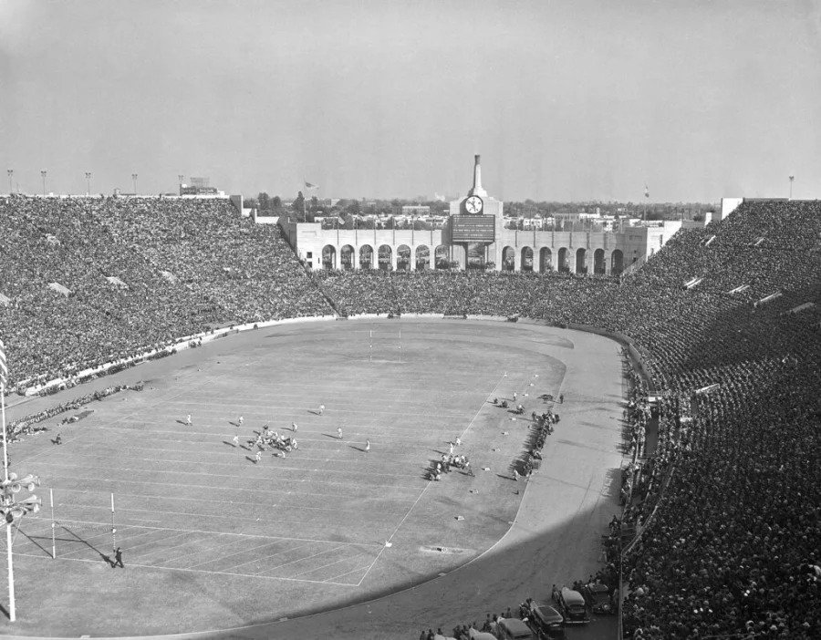
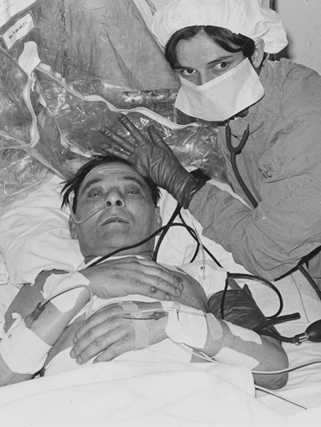
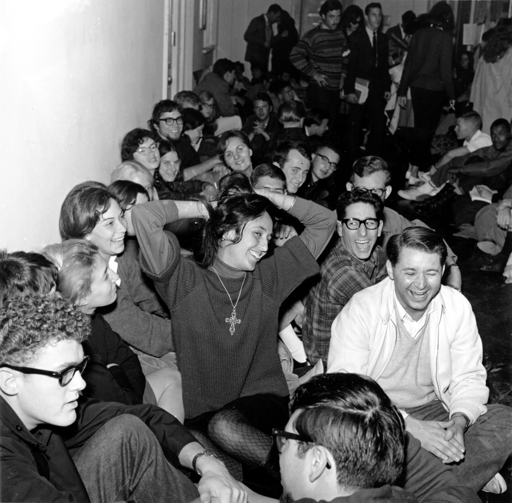
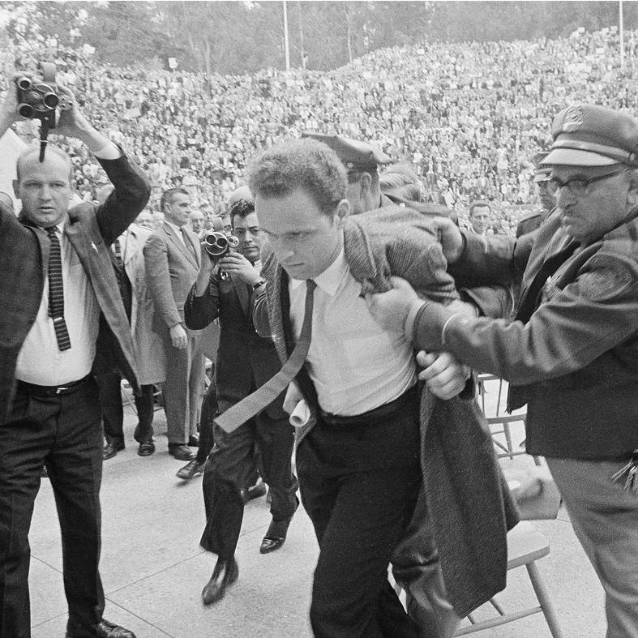

101,000 people was the biggest crowd ever to attend a game at Los Angeles for the colorful Notre Dame-U.S.C. series and
rivaled the huge throng that saw the Trojan-Irish game in Chicago in 1929

Surgeons at the Groote Shuur Hospital in Cape Town, South Africa,
led by Dr. Christiaan Barnard, perform the first human heart transplant.

Police arrested some 800 students at the University of California at Berkeley, one day after the students stormed
the administration building and staged a massive sit-in

